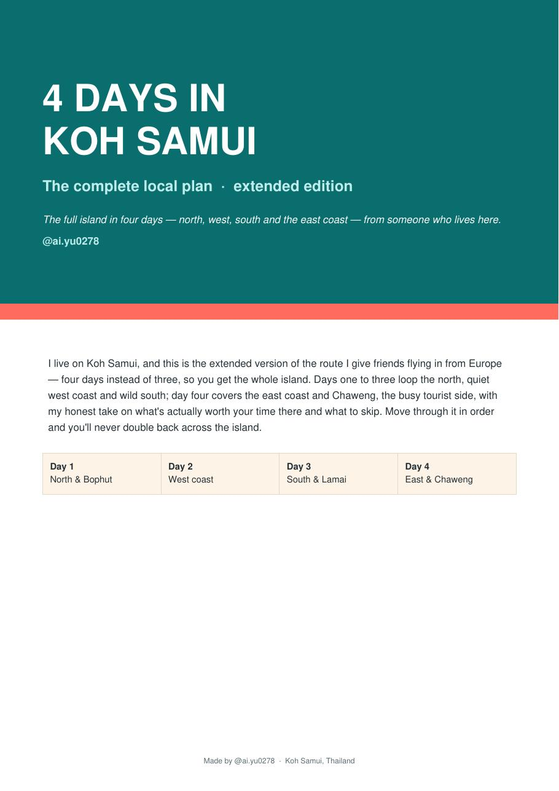
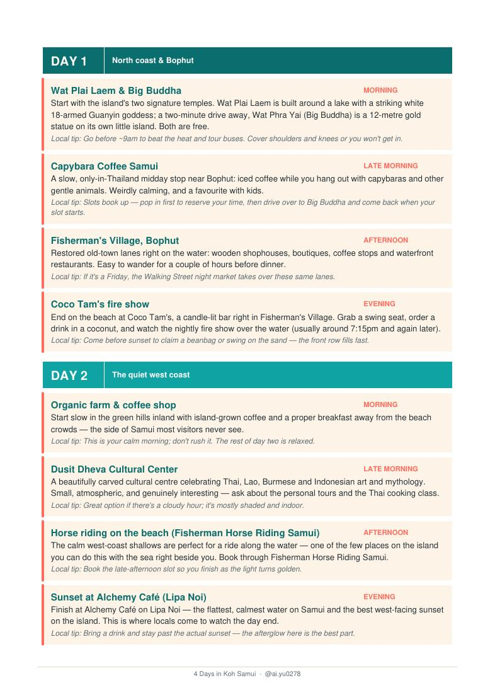
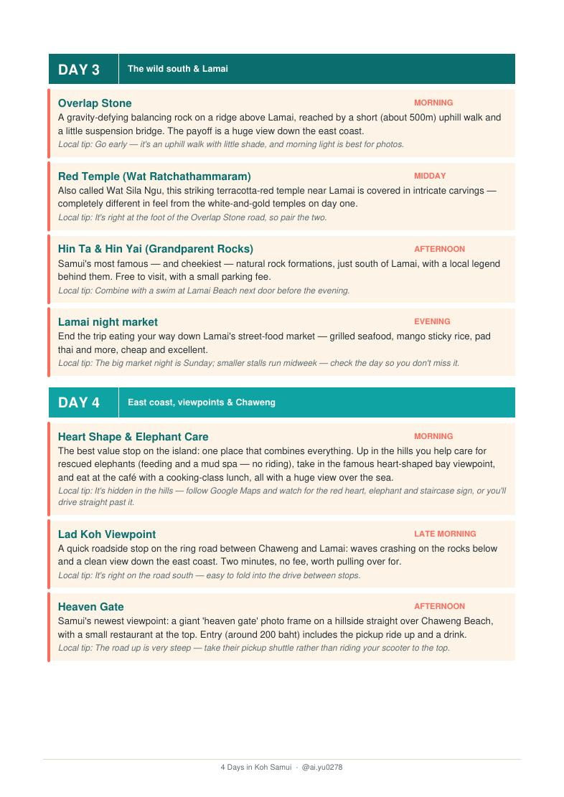
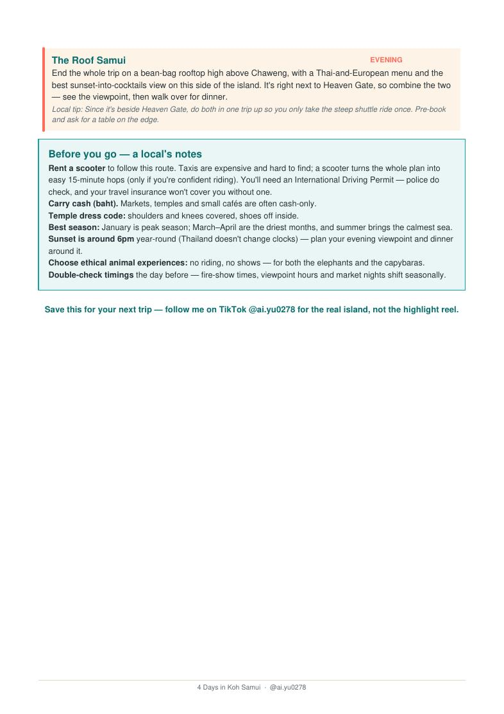

The whole island in four days, in the right order.
This is the route I give friends flying in from Europe. North, west coast, south, then the east — sequenced so you never cross the island twice and never waste a morning working out where to go.
Price excludes VAT — your country's exact total is shown at checkout.Shown in your currency, VAT included. PDF emailed straight after payment.
Four days, sixteen stops, and the timing that makes them work.
- A route that never doubles back
Day 1 north and Bophut, day 2 the quiet west coast, day 3 the wild south and Lamai, day 4 the east and Chaweng. Follow it in order and you never re-cross the island.
- Every stop slotted into a time of day
Morning, late morning, afternoon, evening. Temples before 9am, horse riding in the late slot so you finish in golden light, Coco Tam's before sunset to get a swing seat.
- A local tip on every single stop
Which booking to reserve first, which market night to check, where the front row fills fast, and what to wear so you actually get in.
- The honest take on Chaweng
Day 4 covers the busy tourist side — with what's genuinely worth your time there and what to walk past.
- The only-in-Thailand stops
Capybara coffee, the balancing Overlap Stone, the terracotta Red Temple, the rescued-elephant care place with the heart-shaped bay view.



Read day one before you pay for the other three.
The cover and the full first day, free. If the tone isn't for you, you'll know in two minutes and it cost you nothing.
Who this isn't for.
- You're here for two weeks and want to drift. This is a dense four-day plan — it would exhaust you spread thin.
- You won't rent a scooter or a car. Days 2 and 3 assume wheels; without them you're limited to Chaweng, Lamai and Bophut.
- You want hotel recommendations. That's the Area Guide — this one is about what you do, not where you sleep.
- You want a month-by-month weather answer. That's When to Come.
€3. Less than the taxi to the first temple.
Instant download, no account, no subscription. Save it to your phone before you fly — it works with no signal.
Price excludes VAT — your country's exact total is shown at checkout.Shown in your currency, VAT included. PDF emailed straight after payment.
The questions I actually get.
What format is it?
A 4-page PDF. It opens on any phone, tablet or laptop, and it works with no internet — which matters, because signal on the island is fine but not everywhere.
Do I need a scooter?
For days 2 and 3, yes — or a car, or a taxi budget. Day 1 and day 4 are doable from a Bophut or Chaweng base without wheels.
Can I stretch it to five or six days?
Easily. The days are self-contained, so you can split day 2 or add a beach day between any two without breaking the route.
What if the places close or change?
I live here, so I notice. I update the file and re-send it to everyone who bought it, free, whenever something material changes.
What if it's not what I expected?
That's exactly what the free sample is for — real pages, not a teaser, before you pay anything. Because the file downloads instantly and can't be handed back, sales are final once you've got it. If the download fails or the file is broken, message me and I'll fix it or refund it.
Isn't this in the free guide?
No. The free guide is a list of 300+ places. This is the order to do them in, which is the part that actually takes time to work out.

I've lived on Koh Samui for three years. This isn't a week's visit written up afterwards — it's the route I've refined by sending actual friends around the island and hearing what worked. The tips are the ones I'd give you over a coffee, written down so I don't have to repeat them.